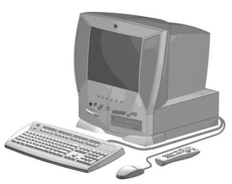

Sobre mim
Analista de Suporte | Especializando em Dados e Performance do Sistema | Pronto para Entregar Resultados de Excelência
Olá! Sou Mauro Lucas. Na década de 1990, meu pai, Mauro Marcos, possuía um minimercado onde um cliente deixou um computador como garantia de compra. Lembro-me claramente desse episódio até hoje: o computador em questão era equipado com um processador 386, executando o sistema operacional Windows 3.11, proporcionando meu primeiro contato com o MS-DOS e o software de edição EDIT. Após alguns anos, meus pais adquiriram um computador para nossa casa, apelidado de "Corujinha", um Compaq Presario 4410, equipado com um processador Intel Pentium de 233 MHz, 32 MB de memória RAM, um disco rígido de 1.2 GB e um drive óptico CD-ROM IDE. Foi com esse equipamento que aprendi a formatar e instalar o Windows 95 / 98, realizando formatações frequentes. Logo em seguida, matriculei-me em um curso técnico de processamento de dados, onde fui introduzido às linguagens de programação Visual Basic 5 e Delphi. Durante esse período, desenvolvi um sistema para o comércio de meu pai. Após 20 anos trabalhando com suporte de hardware e infraestrutura de redes, retomei meu interesse inicial em desenvolvimento de software. Estou em busca de atualizar meus conhecimentos nas tecnologias contemporâneas, dando continuidade ao meu projeto de vida de trabalhar com software.
 Experiências ProfissionalGerenet - Gere Tecnologia
Desde o início da minha jornada na Gere, no ano de 2021, tenho trilhado um caminho de crescimento e evolução contínuos. Ao longo desses anos, desenvolvi habilidades sólidas em diversas áreas, destacando-me principalmente em banco de dados relacional, linguagem SQL, lógica de programação e qualidade de software. Na Gere, tive a oportunidade de mergulhar profundamente no mundo dos dados, onde aprendi a navegar e gerenciar sistemas de banco de dados de forma eficaz. Meu domínio da linguagem SQL me permitem manipular grandes conjuntos de dados e extrair insights valiosos para impulsionar a tomada de decisões estratégicas. Além disso, onde desenvolvi habilidades de comunicação e empatia, garantindo que as necessidades dos clientes fossem compreendidas e atendidas de forma eficiente e satisfatória. Busco aplicar em minha rotina de trabalho os princípios fundamentais do sucesso do cliente, conforme delineados por Dan Steinman em sua obra de literatura Customer Success. Um dos aspectos mais desafiadores e gratificantes do meu trabalho foi a resolução de problemas complexos em curtos prazos. A capacidade de pensar de forma analítica e encontrar soluções eficazes rapidamente foi fundamental para o sucesso em minha trajetória profissional. Para complementar minha experiência prática, estou atualmente cursando uma pós-graduação em Data Science. Esta jornada acadêmica tem sido uma oportunidade incrível para aprofundar meus conhecimentos teóricos e explorar novas técnicas e metodologias no campo da ciência de dados. Em resumo, minha jornada na Gere tem sido marcada por um constante aprendizado e aprimoramento. Estou comprometido em continuar expandindo meus horizontes e contribuindo de forma significativa para qualquer equipe ou projeto em que esteja envolvido.
Secretaria da Fazenda do Estado de São Paulo e Polícia Militar do Estado de São Paulo
Desde 2012, tive a oportunidade de trabalhar em contratos de serviços especializados em TI dentro da Secretaria da Fazenda do Estado de São Paulo e da Polícia Militar do Estado de São Paulo. Foram experiências únicas, onde pude conhecer o funcionamento do setor público de dentro para fora. Durante esse período, tive a oportunidade de identificar, corrigir e, por que não dizer, aprimorar o atendimento ao público por meio de melhorias na infraestrutura tecnológica, reduzindo o impacto de falhas que afetavam a operação das instituições em que atuei. Tanto a SEFAZ DRT10 quanto a DRA09, assim como a Polícia Militar CPI-08, operam dentro das 53 cidades que compõem a região de atendimento. Na Polícia Militar, realizávamos todos os atendimentos presenciais, incluindo o atendimento à Polícia Rodoviária, Militar, Ambiental e ao Corpo de Bombeiros, desde Presidente Prudente até o território de Rosana, Paulicéia e Assis.